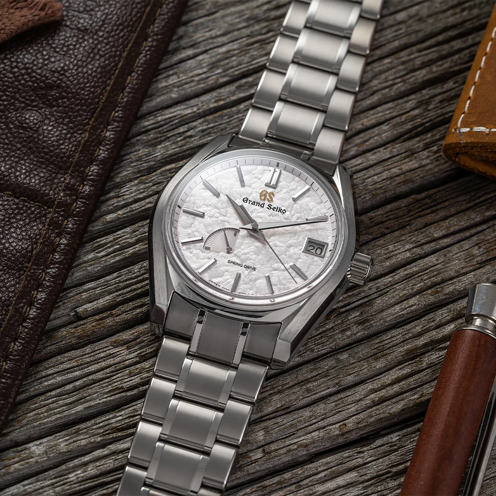
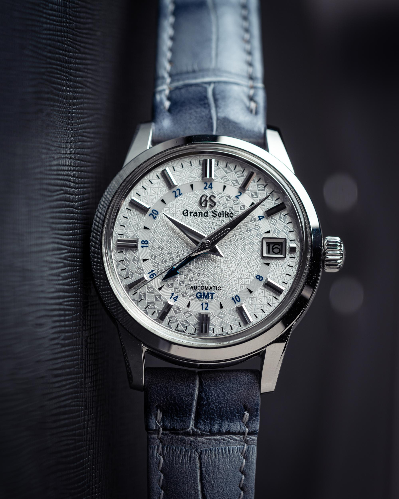
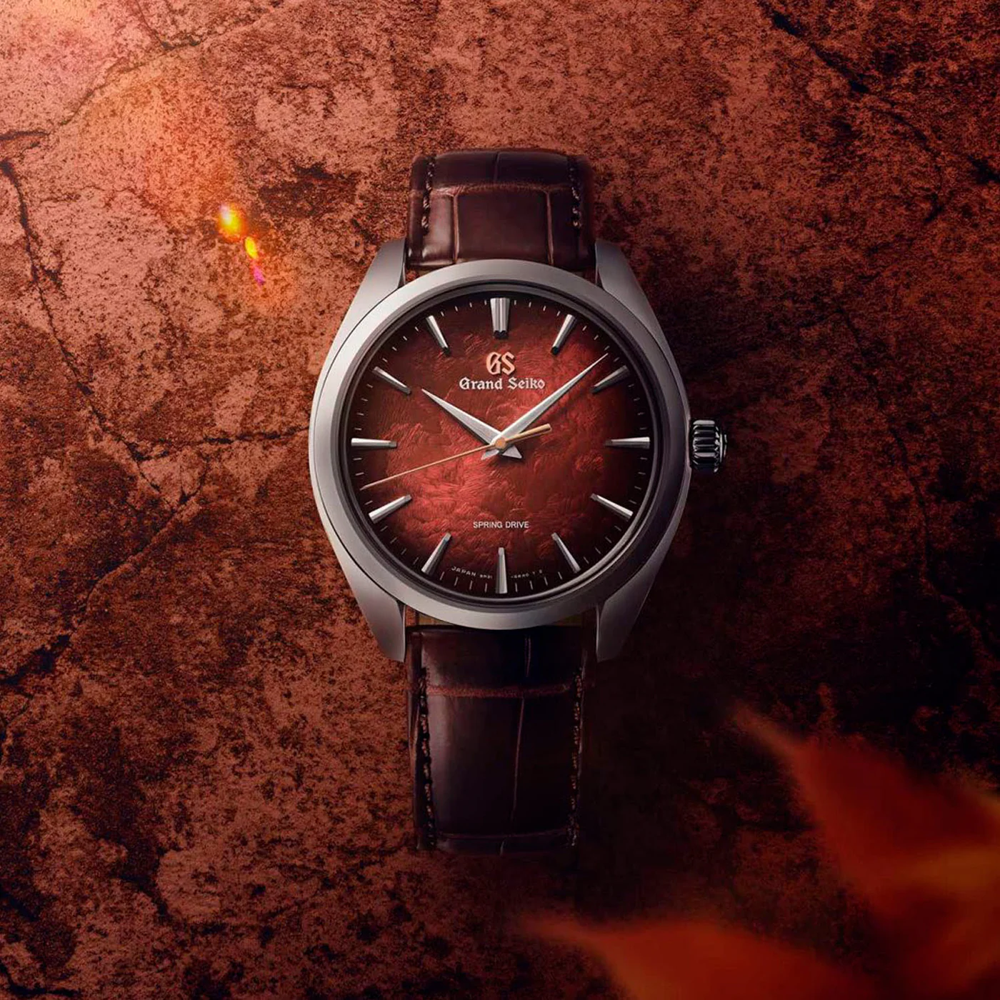
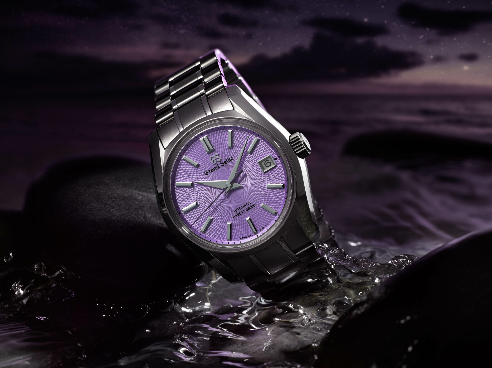

My Wishlist watches

This is an image of the iconic Grand Seiko Shunbun. One of the most popular out of all the Grand Seikos.

This is an image of a Grand Seiko with a unique whirlpool dial. In addition of the whirlpool dial, it also has a GMT function.

This is a image of a newer limited edition Grand Seiko, but with a unique red dial.

This is an image of a 200 piece limited edition Grand Seiko. It was part of a collaboration with Grand Seiko and Watches of Switzerland.
"Bringing together mechanical and electronic watchmaking for the best of both worlds."